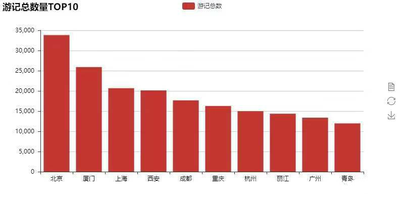
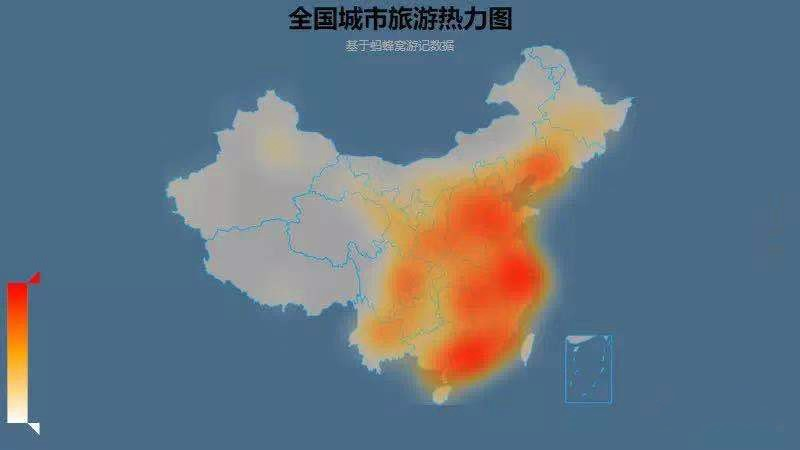
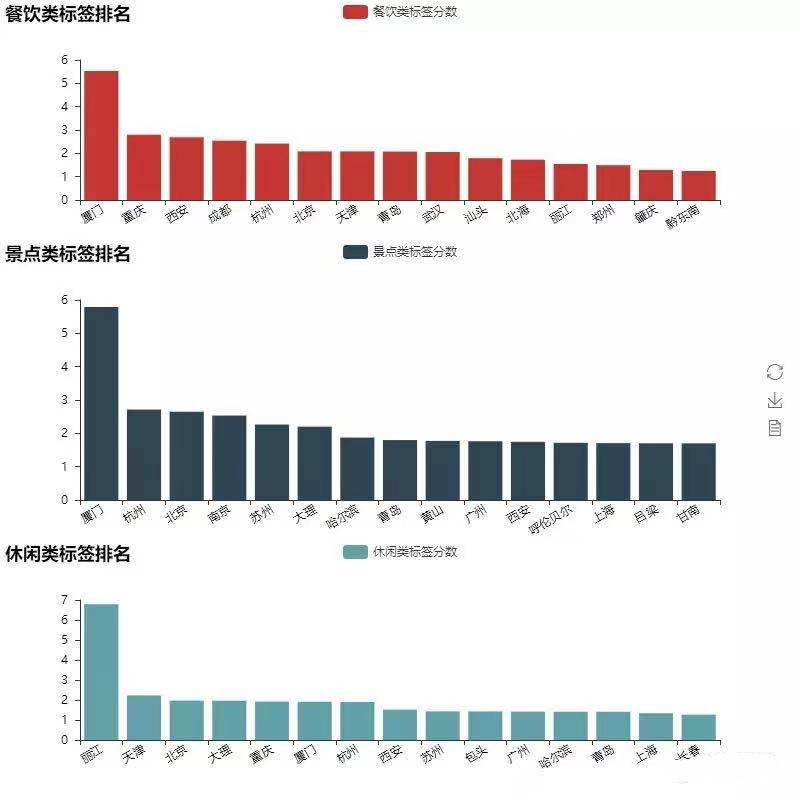
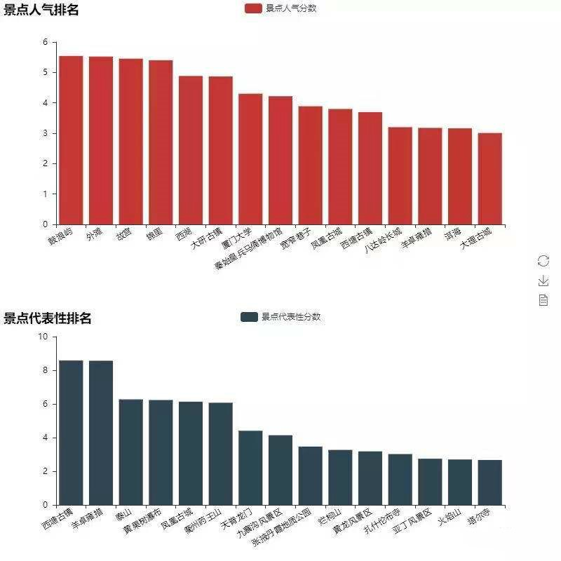
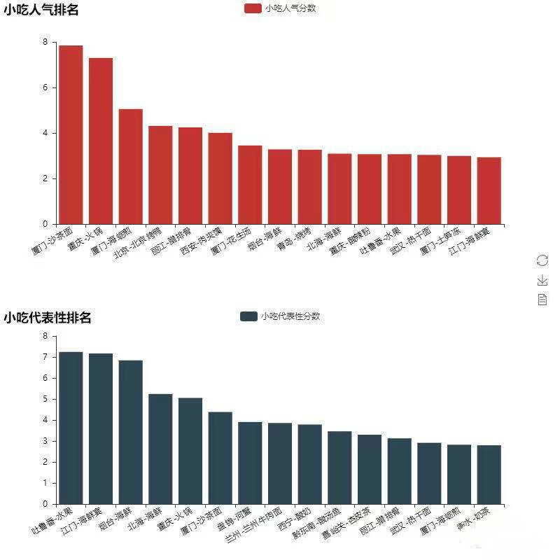

一、项目团队成员：
小组成员：大数据173邱邵云，大数据173陈柳，大数据173余凤莲
指导老师：刘兰华
二、项目描述及结果展示：
1.数据爬取。通过爬取旅行攻略网站，获取关于城市、景点以及其他的
一些信息数据。首先从目的地页面获得各省编码，之后进入各省城市列表获得编码，
这些城市的数据可以从小吃页面，景点页面，标签页面等获取。为了方便调用，
我们将每个城市获取数据的过程封装成函数，每次只需要传入之前获得的城市编码。
2.接下来对于爬取到的数据进行分析
(1)首先看看有游记做为标记的城市排行前十是哪几个：

(2)游记数量TOP10数量基本上与我们日常所了解的热门城市相符， 我们进一步根据各个城市游记数量获得全国旅行目的地热力图：
(3)这个图和我们朋友圈晒的足迹图与这幅图很相符。最后我们看一下 大家对于各个城市的印象是如何的，方法就是提取标签中的属性，我们将属性分 为了休闲、饮食、景点三组，分别看一下每一组属性下大家印象最深的城市：
(4)接下来提取各个景点评论数，并与城市游记数量进行对比，分别 得到景点评论的绝对值和相对值，并据此计算景点的人气、代表性两个分数，最终 排名TOP15的景点如下：
(5)最后看一下我们最关注的的与吃相关的数据，处理方法与景点数据相似， 我们分别看一下最具人气和最具城市代表性的小吃：